From DJs to DJs
The music player for DJs and music lovers.
Drop tracks in, double-click to play — no library to build, no sign-in, no nag. The analysis a DJ needs. The beauty everyone deserves.
One growing family of sound tools.
JUST PLAY · JUST STREAM · JUST TAG · JustPlay CLI · more coming
JUST PLAY · the player
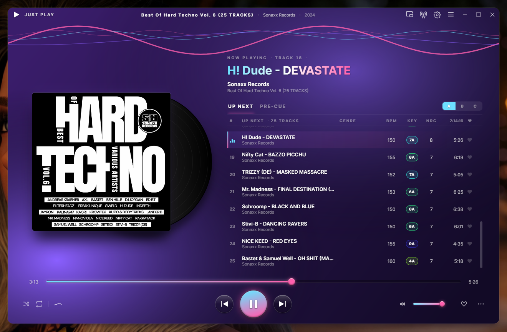
JUST PLAY — queue with Camelot key, BPM & energy
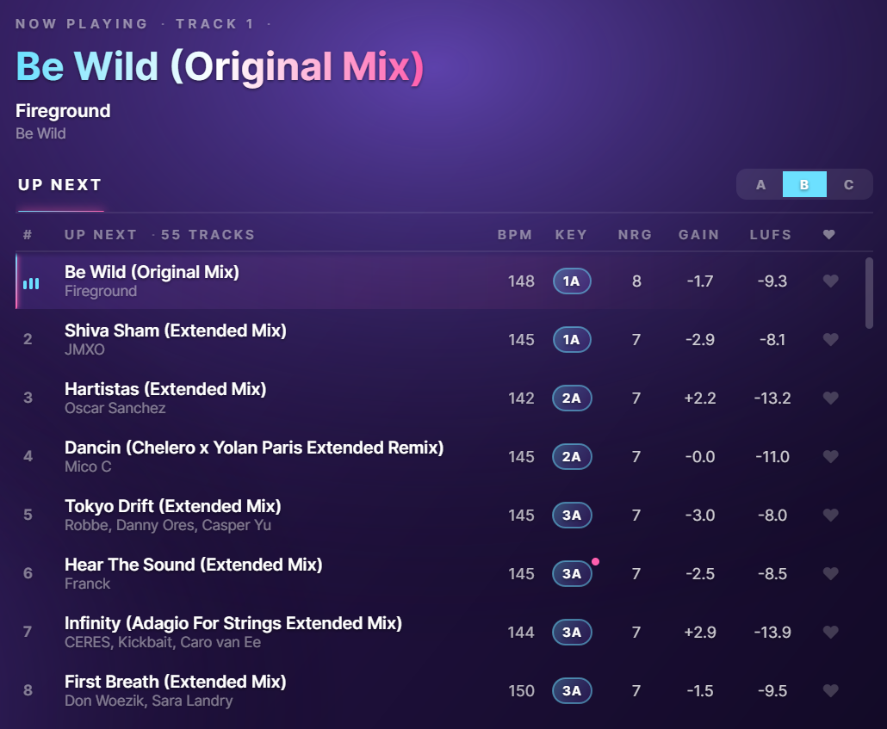
Analysis — key · BPM · energy · loudness
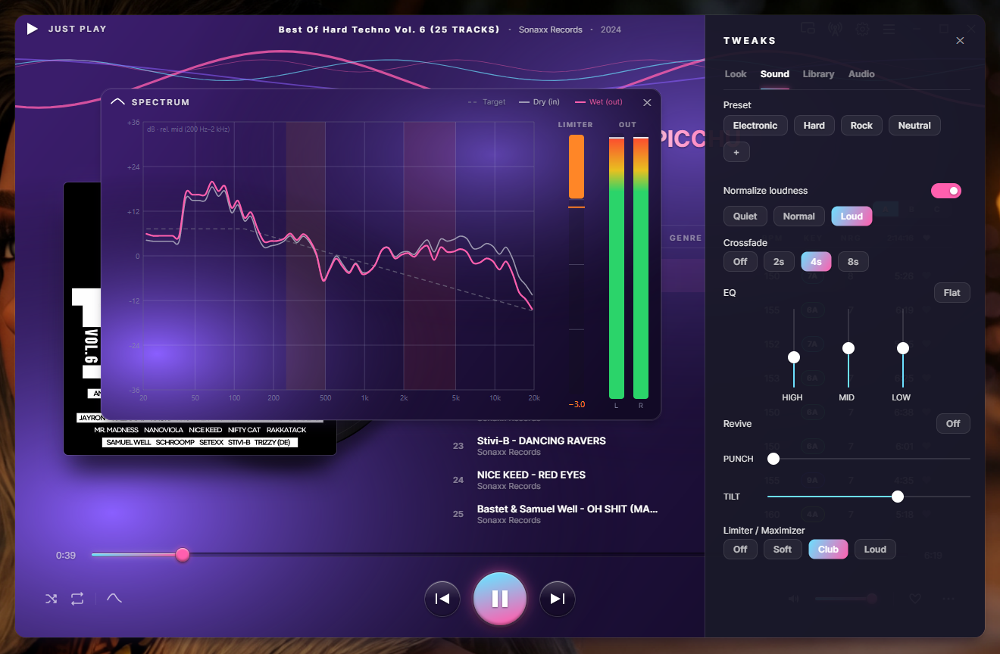
Sound — genre presets & DSP rack
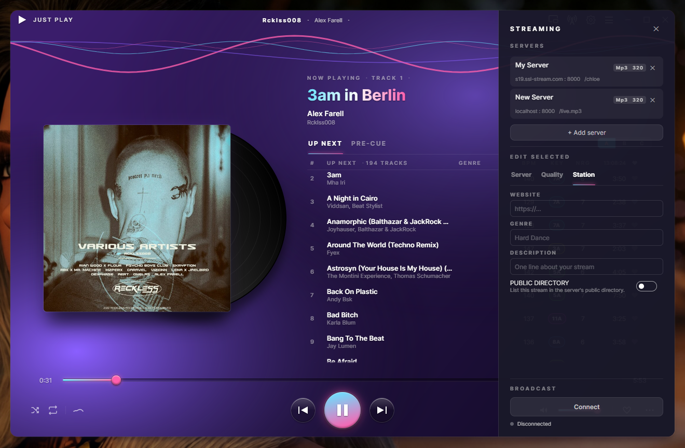
Stream from the player · MP3 or Opus
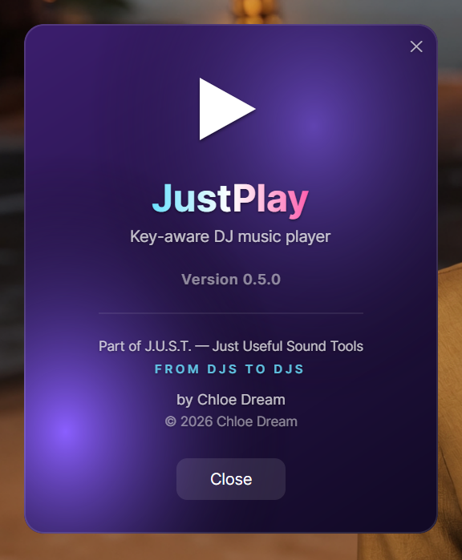
About · part of J.U.S.T.
JUST PLAY · headphone auditioning
A keyboard-first window to browse your whole library — folders and playlists both — and audition the next track on your headphones while the set keeps playing. On one output it ducks the main sound while you cue and brings it back after; if you're streaming, the broadcast is never touched. Every column is the analysis you already trust: Camelot key, BPM, energy, groove.
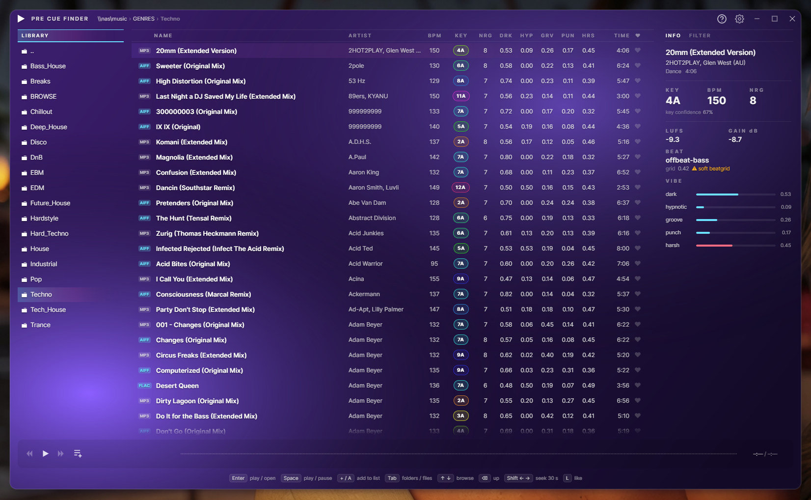
Pre-Cue Finder — browse, audition, cue on headphones
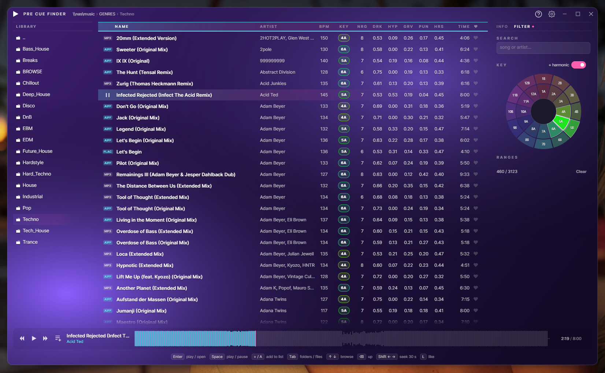
Filter — Camelot key wheel & range sliders
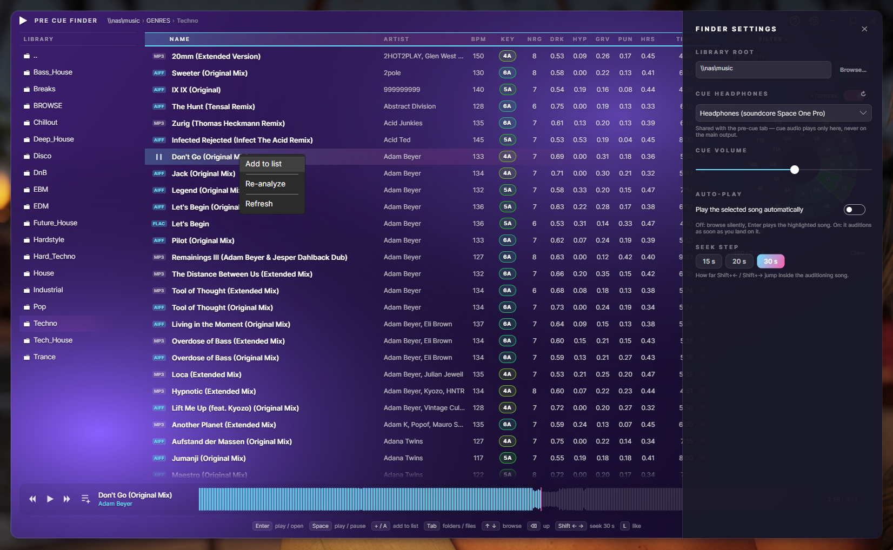
Cue routing & right-click actions
A second app in the same install
A standalone broadcaster in the same install. Its headline trick: capture the audio of one application — your DJ software, a browser tab — and stream exactly that to Icecast. On a multi-out DJ interface it isolates the Master pair automatically, so your headphone cue never goes on air. No virtual cables, no routing to untangle. And it records your whole set as you play — auto-started, auto-trimmed, saved to MP3 or lossless.
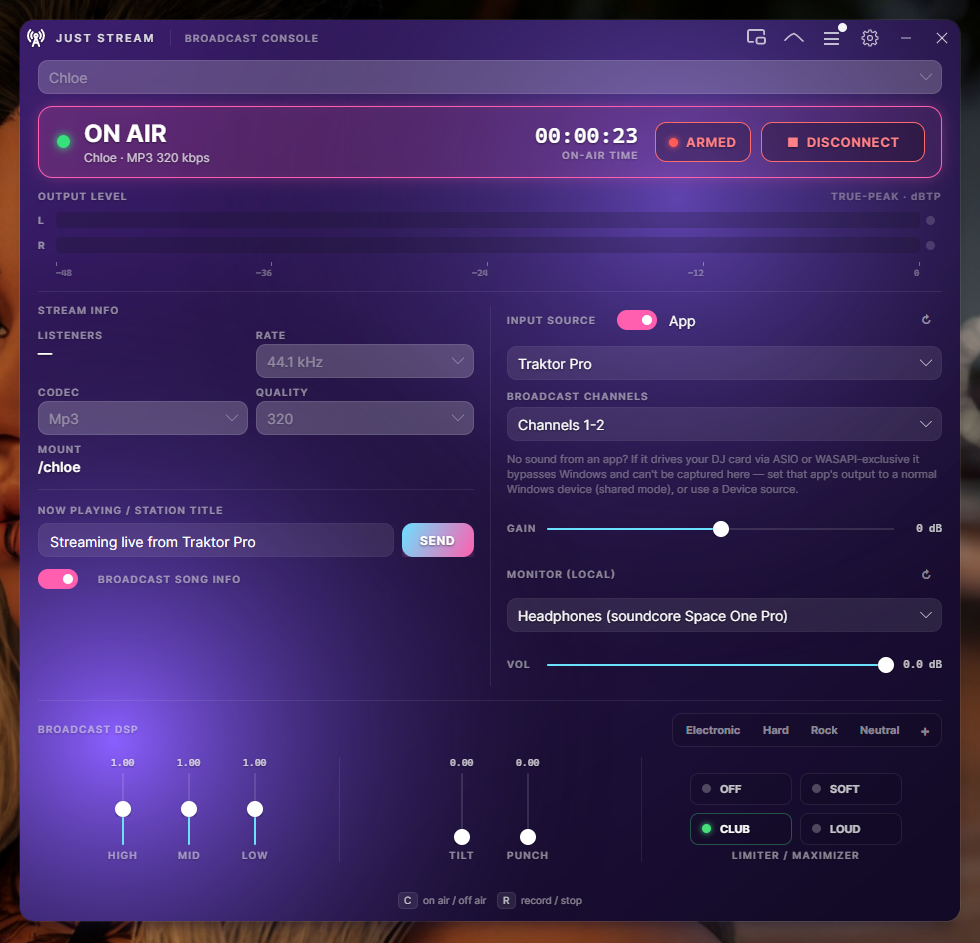
Broadcast console — capture an app, on air, DSP & presets
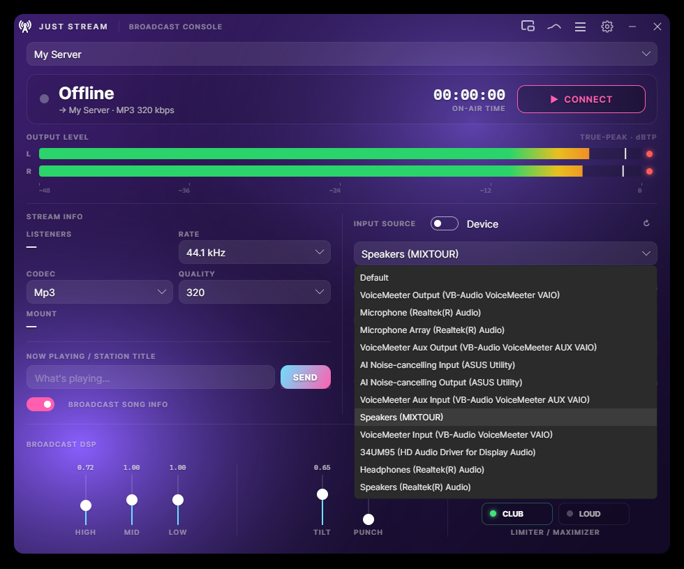
Input source — app or any device
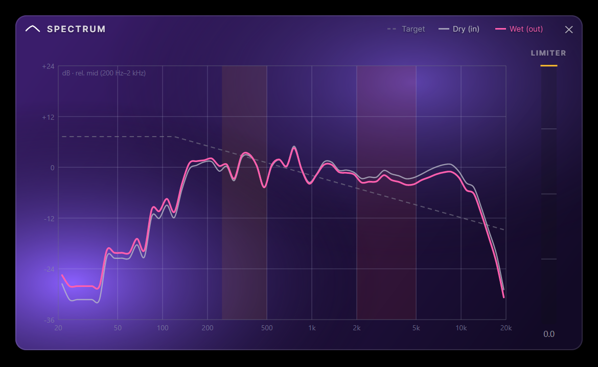
Spectrum — DRY vs WET vs target
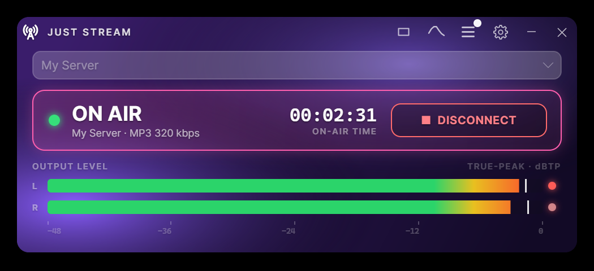
Compact on-air strip
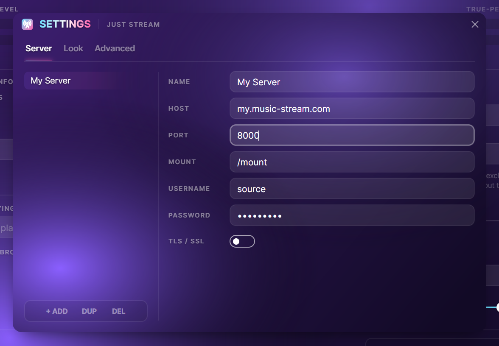
Server profiles · MP3 or Opus · TLS
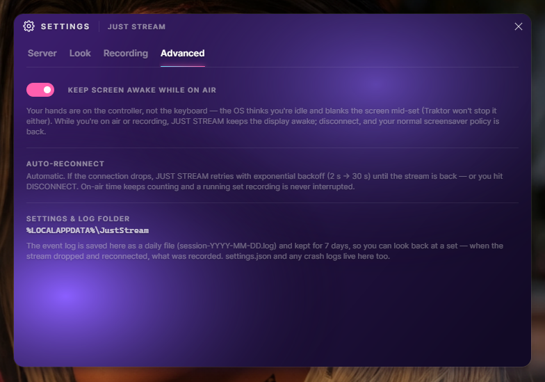
Advanced — stay-awake, auto-reconnect, log
New in v0.6.0 · a third app in the same install
The tag editor for a folder that just finished downloading — and for a DJ library that already has cue points in it. Browse a folder, fix one file or three hundred, rename from the tags or pull tags out of the file names, move things where they belong, and hear the track while you do it. Every bulk operation shows you what it is about to do before it does it.
Measured, not claimed: 787 of 787 vendor frame payloads came back byte-identical.
128 real writes across MP3s carrying Serato's GEOB markers, an 85,166-byte Traktor
blob and Mixed In Key's fields — diffed frame by frame. Zero bytes lost, the audio stream
untouched in all 128. Another widely used tagging library, measured on the same files, truncated
the Serato blob, renamed Mixed In Key's frames and wiped the rating.
The honest limits, because they matter: that measurement is MP3 with ID3v2 only — FLAC,
AIFF, WAV and MP4 are untested — and we preserve bytes. We do not decode Serato's cue
points and never will claim to. The full
method, and the one residual risk, are on the JUST TAG page.
v0.6.0 is the first build that packages and installs JUST TAG — it is on the Start menu with the other two. It is also the youngest app in the suite, so treat it as the beta it is: read a preview before you apply it, on a folder you can afford to have wrong.
Select a folder's worth and every field grows a tick and an X. Ticked and empty means "clear this on all of them" — the cover included. Fields the selection already agrees on start ticked; fields where they differ start off, so nothing gets flattened by accident.
%artist% - %title% builds a file name out of the tags, or pulls tags out of a name — one pattern language, both directions, folders included. It counts your selection as you type ("fits 24 of 37"), and a file that doesn't fit is left exactly as it was.
Fix the text that's already there: replace, Title Case, Sentence case, tidy the whitespace a web copy-paste left behind. Apply can't be reached without the preview — one line per file per field, before and after, and unchanged files aren't listed at all.
There is no overwrite. Not a default, not an option: a name that's taken is a collision, named in the preview, and the answer is "leave both alone" or "keep both". Delete goes to the recycle bin, and a move across drives is copy, verify, then remove.
Every frame a file carries, exactly as it sits on disk, including other tools' frames — GEOB:Serato Markers2, PRIV:TRAKTOR4, TXXX:EnergyLevel. Read-only by contract. You don't have to take our measurement's word for it.
Load, play, pause, seek — right in the panel. Most taggers have no playback at all and hand the file to whatever the OS has registered, which means leaving the tagger to hear what you're tagging. It releases the file by itself when a save needs it.
New in v0.6.0 · the library
The Pre-Cue Finder can now search everything below a folder instead of one directory at a time, filter across all the playlists in a crate at once, and paint a big folder the moment you step into it. All three need an index — so v0.6.0 builds one, on your own machine, out of the tags that are already in your files.
Your files stay the truth, and nothing is ever written next to your music.
Everything JustPlay measures already lives in each track's own tags, so every computer derives
its own local index from them and keeps it in your user profile. Two machines pointed at one
NAS both stay current with no shared database between them.
It is off until you switch it on. One toggle in the finder settings, and scanning is one
explicit button — never scan and no index file is created at all, so browsing behaves exactly
as it did in v0.5.0. The index can't hide a track from you either: files it has never seen are
still listed, with blank columns, and a file that has gone missing is flagged rather than
quietly dropped.
And the half that isn't done, because a beta should say so: nothing watches the folder for you yet, so the index catches up when you press Scan or open a folder that has changed. A scan indexes — it does not analyse. Tracks with no key or BPM in them get listed, not queued; running the detectors over a whole library is still the CLI's job.
What it does
Musical key in Camelot notation — our own on-device chromagram engine, trained in-house. Runs fully offline, no cloud, no GPU. Mix in key, or let Harmonic Sort arrange it for you.
Tempo and a 1–10 energy score detected on add, so you can order your set by feel and intensity at a glance — for DJs planning a gig or music lovers curating a mood.
Drop your tracks in and JustPlay sequences them into a flowing set — key compatibility, BPM, energy and groove all considered. A head start on any DJ set, or a playlist that simply flows.
A keyboard-first window to browse your whole library and audition the next track on your headphones — cueing ducks the main output, the live stream is never touched. Filter by a Camelot key wheel, BPM and energy; open a playlist straight into your set.
Search everything below a folder, filter across a whole crate of playlists at once, and open a big folder instantly. The index is built on your machine from the tags already in your files, lives in your user profile, and stays off until you switch it on — never scan and no index file is created at all.
Detected key, BPM and energy can be saved into each file's metadata — so the analysis travels with the track and every other app can read it. Only when you ask. Every change undoable. For a whole folder at a time, that's JUST TAG's job.
Three switchable column layouts for your queue. Each view — A, B, C — remembers its own columns: Genre, BPM, Key, Energy, Gain, LUFS, Duration, Like. Flip from a mixing layout to a loudness layout to a library layout in one click. Every column is click-to-sort.
ReplayGain / EBU R128 normalization keeps your queue consistent across tracks — clip-safe, non-destructive. Three modes: Quiet, Normal, Loud.
Broadcast your set to an Icecast server with a one-glance on-air indicator. Multiple server profiles, MP3 or Opus, crossfade between tracks — share your sound.
The sister broadcaster streams the audio of a single application — your DJ software, a browser, not your whole sound card — straight to Icecast, auto-isolating the Master pair so your cue stays private. Same look, same DSP.
A live listener count on the console, with the session peak beside it. It reads the server's public status page over a plain HTTP request, so no admin password is stored anywhere — and a server that stops answering costs you the number, never the broadcast.
Set-and-forget capture of your whole set — you record like you stream. The file is the finished, limited master that goes on air, so it's already loudness-managed: auto-gain, clip-safe. Auto-record starts with CONNECT, and auto-trim begins the file on the first beat and cuts the dead air — no "15 minutes of silence before the music." MP3, FLAC, AIFF or WAV, and a recording glitch can never interrupt the broadcast.
Aurora, Sunset, Midnight, Onyx, Neon and Hardcore — from soft aurora to pitch-black to all-black-with-red. Live palette swap, no restart, and the app icon repaints to match.
No library to build, no scan, no account. Drag files in, double-click, go. Close it and your queue is gone again — the file tags are the memory. The v0.6.0 index is opt-in, and off until you ask for it. That's the whole philosophy.
JustPlayCLI drives the same engine from the command line — scan, analyse, tag, sort, stats — so scripts and AI agents can work a whole library without the GUI. An MCP surface is on the way.
One rack · player & stream
One rack — every output. The same chain shapes local playback in JUST PLAY, its Icecast stream, and JUST STREAM's broadcast — bit-perfect when every module sits at neutral. Genre presets get you there in a click: Electronic, Hard (tames a harsh top end and pushes it loud), Rock and Neutral — the same tone in both apps, with JUST STREAM running the limiter a notch louder for broadcast. Built for hard dance, schranz, and everything that needs to hit the back of the room without fatigue.
The philosophy
What you get
What you'll never get
You listen with your eyes.
Music is wonderful. It deserves a player worthy of it — beautiful, honest, and out of the way.